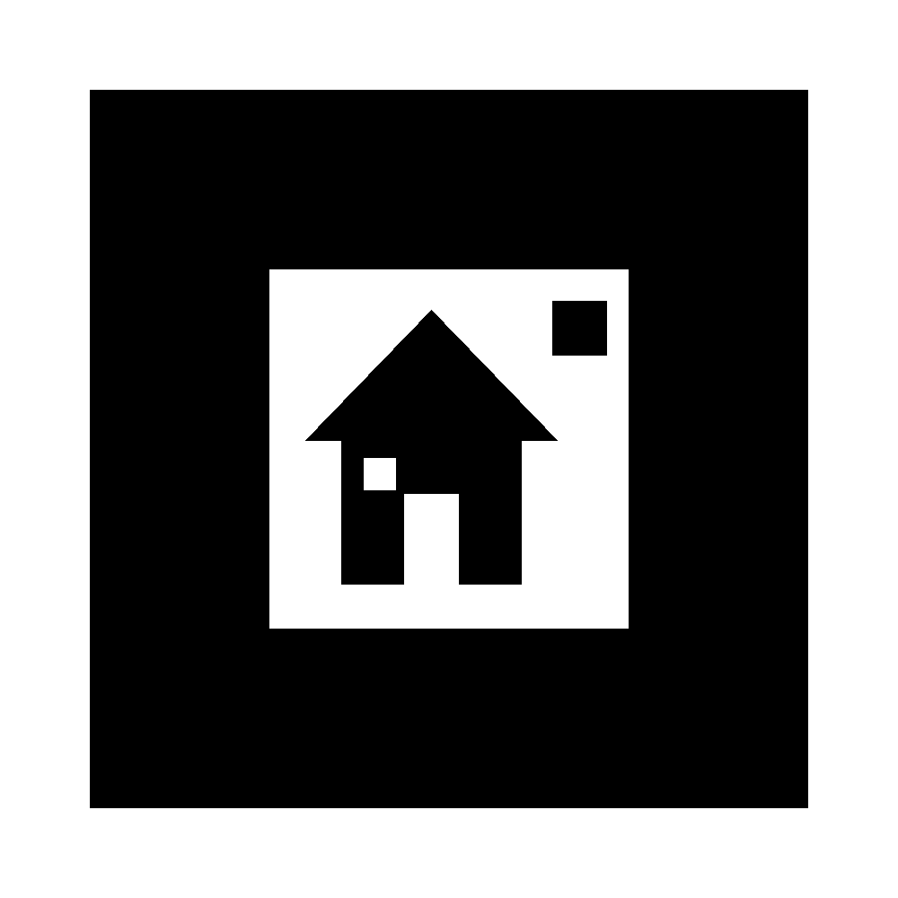

印刷しない場合：PCやタブレットでこのマーカーを表示し、別のスマートフォンのカメラで映してください。机の上に重ねたい場合は紙への印刷がおすすめです。同じスマートフォンにマーカーを表示するだけでは、その端末の背面カメラで読み取れません。
表示されない場合：マーカーを拡大し、枠が隠れていないか、反射や影がないか確認してください。明るさと距離を調整し、カメラのピントが合うまで少し待ちます。このアプリ専用のマーカーです。HIROやQRコードの登録・読み取りは必要ありません。
